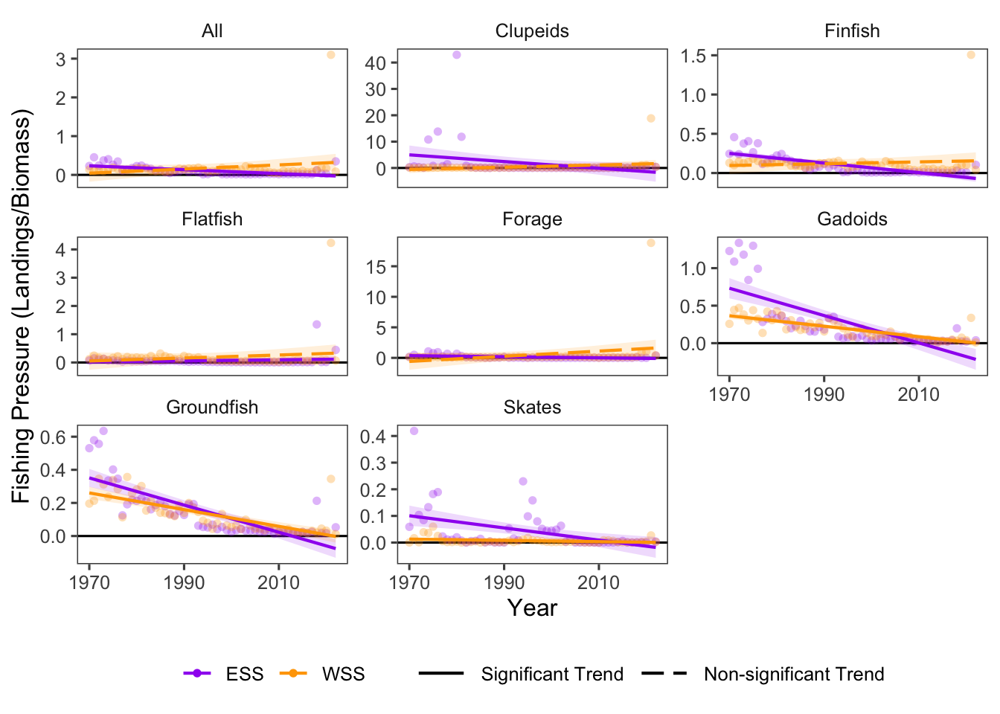

13 Fishing Pressure
Data Type: Tabular Data (within eco_indicators)
Spatial Scope: Maritimes
Duration 1970-2022
Source: Bundy et al. 2017
13.1 Introduction to Indicator
Fishing pressure is a relative metric of intensity of exploitation on fished groups. Here, fishing pressure is presented per guild and calculated as a ration: fishing pressure = total landings / total biomass (Bundy, Gomez, and Cook 2017).
Because fishing pressure in a metric, changes in fishing pressure can either result from changes to total landings, changes to total biomass, or both. Conversely, stability in fishing pressure does not guarantee that total landings and total biomass are also stable; if each value changes in the same direction, fishing pressure might remain stable.
13.2 View Data
library(tidyr)
library(plotly)
library(stringr)
plotly_df <- data@data %>% inner_join(global_cols3)
# function to create plot with dropdown menu ------------------------------
make_biomass_dropdown_plot <- function(df,
year_col = "year",
region_col = "region",
value_suffix = "_value") {
# convert to long format
long <- df %>%
janitor::clean_names() %>%
pivot_longer(
cols = ends_with(value_suffix),
names_to = "metric",
values_to = "value"
) %>%
# remove suffix
mutate(
metric = str_remove(metric, "_value")
) %>%
# drop NAs (some regions don't have data for some variables or years)
tidyr::drop_na(value)
# find all metrics and regions
metrics <- unique(long$metric)
regions <- unique(long[[region_col]])
# assign regions to consistent colors
# region_colors <- setNames(hcl.colors(length(regions), palette = "Dark 3"), regions)
# clean names for dropdown panels, helper
pretty_label <- function(x) str_to_title(gsub("fp_", "", x))
# build plot -----------------
p <- plot_ly()
# Add bar traces: metric1 has region1..K, metric2 has region1..K, ...
for (metric_i in seq_along(metrics)) {
m <- metrics[metric_i]
for (region_i in regions) {
dat <- long %>%
filter(metric == m, .data[[region_col]] == region_i) %>%
group_by(.data[[year_col]],color, linetype, linewidth, region_group, region_group_label) %>% # in case you have multiple rows per year
summarise(value = sum(value), .groups = "drop") %>%
arrange(.data[[year_col]])
group_name <- unique(dat$region_group)
color <- unique(dat$color)
linetype <- unique(dat$linetype)
width <- unique(dat$linewidth)
# If a region truly has no data for that metric, add an empty trace
# (keeps trace indexing stable)
if (nrow(dat) == 0) {
dat <- tibble::tibble(!!year_col := integer(0), value = numeric(0))
}
p <- p %>% add_lines(
data = dat,
x = ~.data[[year_col]],
y = ~value,
name = as.character(region_i),
legendgroup = group_name,
legendgrouptitle = list(
text =
ifelse(region_i == "4VN" & group_name == "ESS",
"Eastern Scotian Shelf Zones",
ifelse(region_i == "4X",
"Western Scotian Shelf Zones",
NA))),
showlegend = (metric_i == 1),
visible = (metric_i == 1),
line = list(color = color, dash = linetype),
hovertemplate = paste0("<b>", region_i,":</b> ","%{y:.3f}<extra></extra>") )
}
}
n_regions <- length(regions)
n_traces <- length(metrics) * n_regions
buttons <- lapply(seq_along(metrics), function(metric_i) {
vis <- rep(FALSE, n_traces)
shl <- rep(FALSE, n_traces)
idx_start <- (metric_i - 1) * n_regions + 1
idx_end <- metric_i * n_regions
vis[idx_start:idx_end] <- TRUE
shl[idx_start:idx_end] <- TRUE
list(
method = "update",
args = list(
list(visible = vis, showlegend = shl),
list(
title = pretty_label(metrics[metric_i]),
yaxis = list(title = "Fishing Pressure")
)
),
label = pretty_label(metrics[metric_i])
)
})
p %>%
layout(
barmode = "stack",
hovermode = "x unified",
title = pretty_label(metrics[1]),
xaxis = list(title = str_to_title(year_col)), # keep one bar per year
yaxis = list(title = "Fishing Pressure", fixedrange = TRUE),
legend = list(
title = list(text = str_to_title(region_col)),
x = 1.02, xanchor = "left",
y = 1, yanchor = "top",
groupclick = "toggleitem"
),
updatemenus = list(list(
type = "dropdown",
x = 0, xanchor = "left",
y = 1.15, yanchor = "top",
buttons = buttons
)),
margin = list(r = 180, t = 80),
# add horizontal line at 1
shapes = list(
type = "line",
xref = "paper",
yref = "y",
x0 = 0,
x1 = 1,
y0 = 1,
y1 = 1,
line = list(color = "black", width = 2, dash = "dash")
)
)
}
# usage:
p <- make_biomass_dropdown_plot(plotly_df)
p <- p %>% config(displayModeBar= F)
# use html to pause scrolling on main page while scrolling in dropdown tab
p %>% htmlwidgets::onRender("
function(el, x) {
const gd = el.querySelector('.js-plotly-plot, .plotly');
if (!gd) return;
function hasPlotlyMenuAncestor(node) {
const menuClasses = new Set([
'updatemenu', 'updatemenus', 'updatemenu-container',
'dropdown', 'dropdown-container',
'scrollbar', 'scrollbar-container'
]);
while (node && node !== gd && node !== document) {
if (node.classList) {
for (const c of node.classList) {
if (menuClasses.has(c)) return true;
}
}
node = node.parentNode;
}
return false;
}
function wheelHandler(e) {
if (!gd.contains(e.target)) return;
if (hasPlotlyMenuAncestor(e.target)) {
// IMPORTANT:
e.preventDefault();
}
}
document.addEventListener('wheel', wheelHandler, { capture: true, passive: false });
document.addEventListener('touchmove', function(e) {
if (!gd.contains(e.target)) return;
if (hasPlotlyMenuAncestor(e.target)) e.preventDefault();
}, { capture: true, passive: false });
}
")Figure 13.1: Fishing pressure in all NAFO regions and Scotian Shelf regions overall.
13.3 Trends
In general, within-group fishing pressure values have decreased over time in the Scotian Shelf. When aggregated between regions within each subgroup and modeled over time, 5 of 8 harvested groups (excluding “All”) showed significantly decreasing trends, while 0 significantly increased.

Figure 13.2: Fishing Pressure for guilds over time in Scotian Shelf.
The most recent date of data collection was in 2022; in the 10 most recent years of sampling (2012–2022), 4 groups had their lowest values to date, and 4 groups had their highest value.
13.3.1 Summary Table
| Metric | Value | Description |
|---|---|---|
| Taxa with decreasing condition trends | 5 groups showed significant decreases in condition over time | Skates, Finfish, Groundfish, Gadoids, and Clupeids. |
| Taxa with increasing condition trends | 0 | No groups significantly increased in condition over time. |
| Fastest decrease | Forage | The Forage group showed the greatest decrease in condition, at a rate of -0.056 per year. |
| Fastest increase | Invertebrates | While not statistically significant,fishing pressure on Invertebrates group showed the fastest increase over time, of 1.475 per year. |
13.4 Relevance to Research and Stock Assessments
Fishing pressure affects populations both by direct removal of individuals from the population, and by alteration of the size-structure and demographic properties of populations. Fishing pressure generally targets larger, older fish, thus truncating the age of the remaining population by removing mature and fecund individuals (Tu, Chen, and Hsieh 2018). High fishing pressure can contribute to the decline or collapse of exploited fisheries (Pinsky and Byler 2015; Essington et al. 2015).